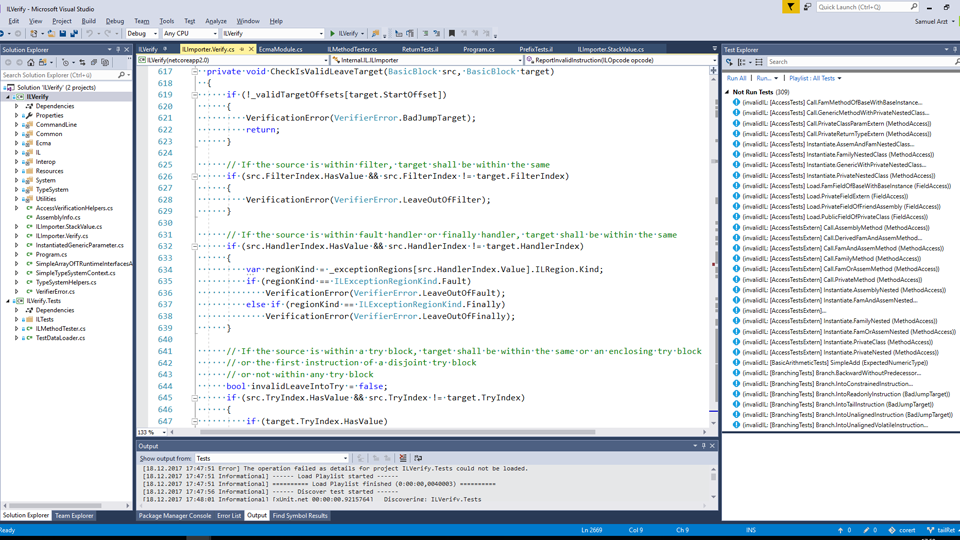
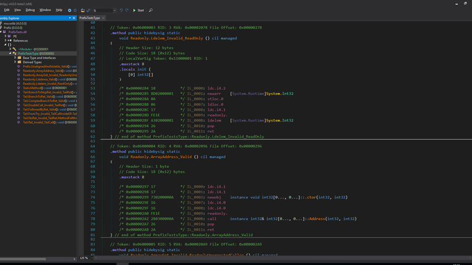
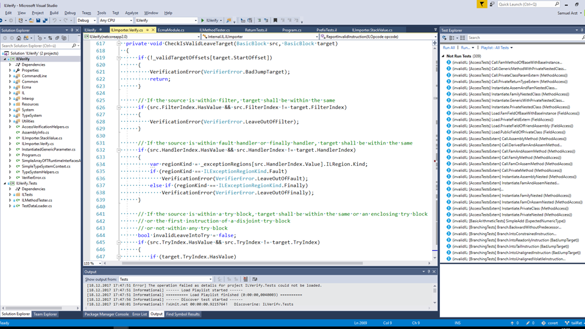
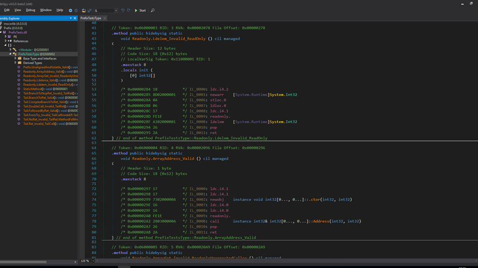

ILVerify
ILVerify ist ein Open-Source Tool von Microsoft. Ich begann im Zuge meines Praktikums bei Dynatrace bei ILVerify mitzuwirken und arbeite seitdem auch in meiner Freizeit daran weiter.
 



Beschreibung
Das Ziel des Projekts ist ein Standalone, Cross-Platform, Open-Source Tool, welches in der Lage ist IL-Code
auf der Basis des ECMA-335
Standards zu verifizieren. Der gesamte Source-Code ist im .NET
CoreRT Repository zu finden.
Die Hauptnutzer dieses Tools sind Entwickler von Software, die IL-Code emittet, also zum Beispiel Compiler-, Debugger- oder
Profiler-Schreiber.
Am Ende meines Praktikums bei Dynatrace habe ich auch einen Blogpost über meine Arbeit an ILVerify geschrieben.
Anleitung
Zurzeit kann ILVerify als Console-Applikation verwendet werden, wobei eine Public-API
geplant ist. Um den IL-Code einer Assembly
zu verifizieren, muss ihr Ort und der Ort aller Assemblies die sie referenziert angegeben werden. Zum Beispiel, um
die Assembly asm.exe zu verifizieren, welche mscorlib.dll und System.dll referenziert, würde
folgender Befehl ausgeführt werden:
ilverify.exe <path-to-asm.exe> -reference <path-to-mscorlib.dll> -reference <path-to-system.dll>
oder verkürzt:
ilverify.exe <path-to-asm.exe> -r <path-to-libfolder-*.dll>
Zusätzlich können reguläre Ausdrücke definiert werden, die angeben welche Methoden inkludiert oder exkludiert werden sollen, mittels -include und -exclude, oder einfach -i und -e. Ebenso kann die Basis Library, die verwendet werden soll mittels -system-module, oder einfach -s, angegeben werden, um Assemblies zu verifizieren, die eine andere Basis Library als mscorlib verwenden.
Entwicklungszeit
Mitte 2017 - laufend